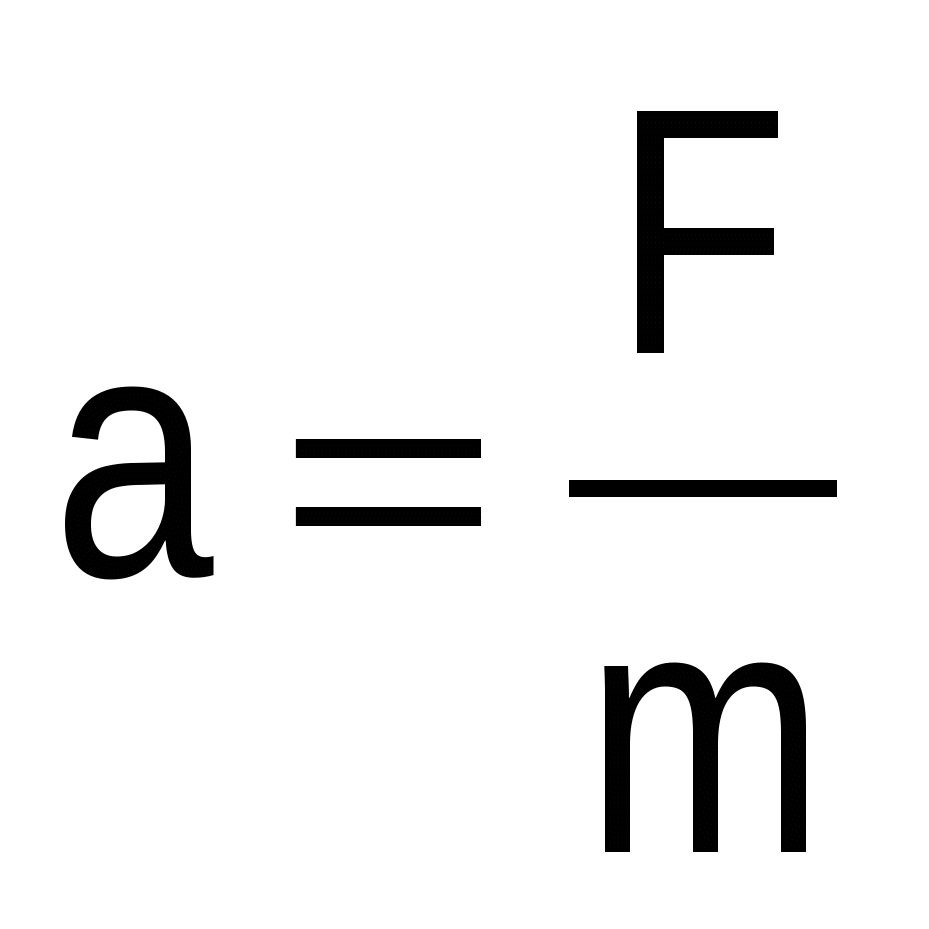
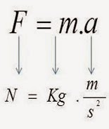
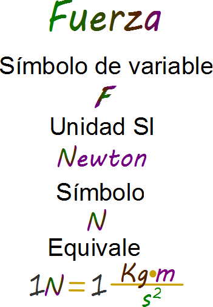
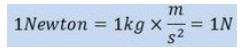
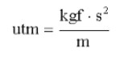
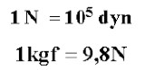
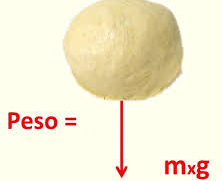

¿Cómo se calcula la Fuerza?
La Segunda Ley de Newton establece que la aceleración de un objeto es directamente proporcional a la fuerza neta que actúa sobre él e inversamente proporcional a su masa, o sea que se rige con la siguiente fórmula:

De igual manera, si despejamos la fuerza (F) podríamos decir que:
 
O sea, la Fuerza (F) se obtiene multiplicando la masa (m) por la aceleración (a). Si trabajo la masa en Kg y la aceleración en m/s2, obtengo la fuerza en Newton (N):

Pero también puede pasar que la m, en lugar de trabajarla en Kg, la trabajemos en gramos (g) o en UTM (Unidad Técnica de Masa), y la a en cm/s2. Entonces ya no obtendríamos la F en N, sino en Dynas (Dyn) y en Kilogramos Fuerza (Kgf).
Veamos: contamos con tres sistemas de unidades: MKS , CGS y el Técnico Internacional. Mostramos sus unidades a continuación:
|
Sistema |
Fuerza (F) |
masa (m) |
aceleración (a) |
|
MKS |
N |
Kg |
m/s2 |
|
CGS |
Dyn |
g |
cm/s2 |
|
Técnico |
Kgf |
UTM |
m/s2 |

A su vez, debemos aclarar las siguientes equivalencias entre unidades de fuerza:
Cuando la masa de un cuerpo está sometida a la aceleración de la gravedad (g), la fuerza que se obtiene es la Fuerza que conocemos como Peso (P). Por tanto, el P, al ser un tipo de fuerza, tendrá también las unidades de N, Dyn y Kgf según el sistema en el que se trabaje:
|
Sistema |
Peso (P) |
masa (m) |
gravedad (g) |
|
MKS |
N |
Kg |
m/s2 |
|
CGS |
Dyn |
g |
cm/s2 |
|
Técnico |
Kgf |
UTM |
m/s2 |


¿Por qué la Torre de Pisa no se cae?
Te invitamos a descubrirlo, por medio del siguiente video
Continuamos!!!
¡Jamás voy a pesarme en esa balanza!
Es habitual escuchar decir "Acá tienen balanza. Esperá que me peso". ¿Es lo mismo hablar de masa que de peso? ¡Nada más incorrecto que eso! ¿Por qué?:
- La balanza es el instrumento de medición de la masa; mientras que el instrumento de medición del peso es el dinamómetro.
- Las unidades de masa son el Kg, g...; mientras que las unidades de peso son N, Dyn y Kgf.
- La masa es una magnitud escalar, mientras que el peso es una magnitud vectorial.
- Si tuviéramos la posibilidad de viajar a otros planetas, nuestra masa se mantendría constante, mientras que el peso variaría, ya que la gravedad depende del tamaño del planeta.
|
Luna lunera.... ¿Sabían que los componentes de la Luna coinciden con los que prevalecen en la capa externa de la Tierra? Algunos especialistas sostienen, que su escasa gravedad (1,65 m/s2) se debe a las características de los elementos que la conforman. Los invitamos a ver esta espectacular recreación audiovisual: La formación de la Tierra y de la Luna.
|
Obra publicada con Licencia Creative Commons Reconocimiento Compartir igual 4.0